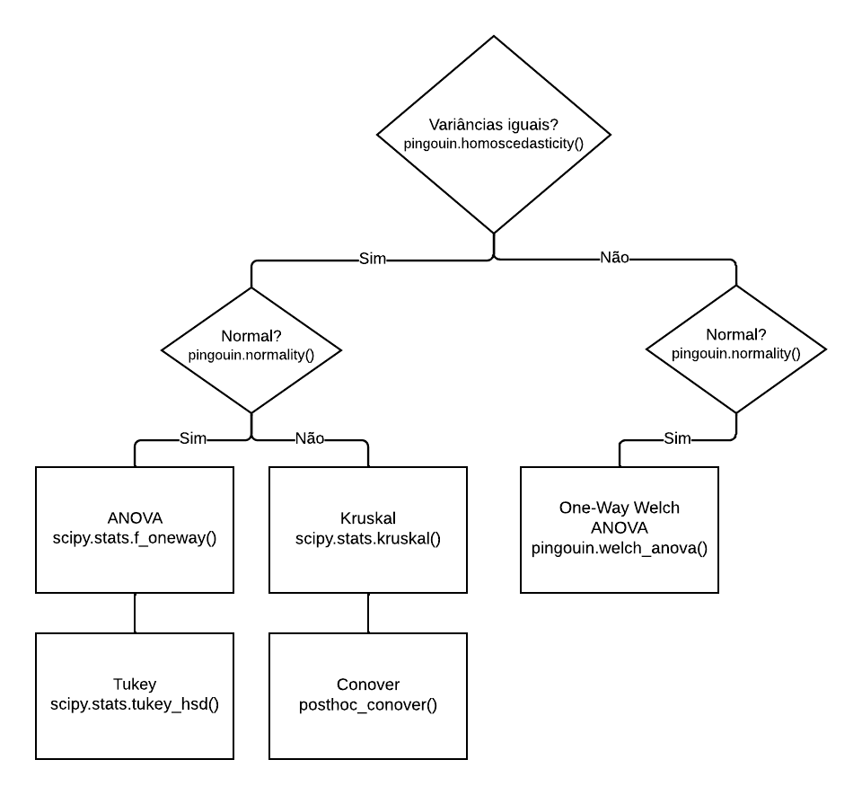
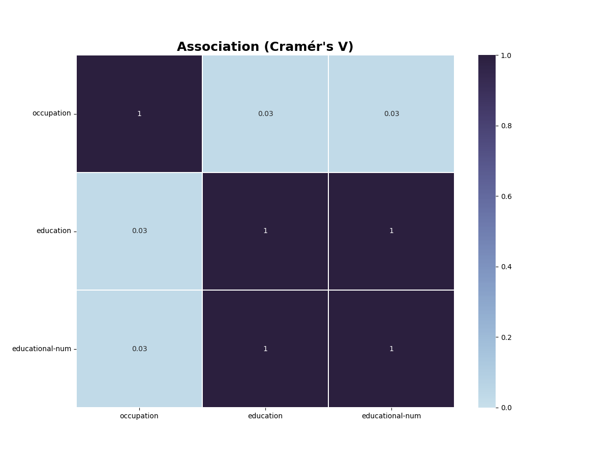

asapy.analysis
Module Contents
Classes
The Analysis object. |
- class asapy.analysis.Analysis
The Analysis object.
- static hypothesis(df, alpha=0.05, verbose=False)
Method that performs hypothesis testing
- Parameters:
df – (Pandas DataFrame) Input data (must contain at least two distributions).
alpha – (float) Significance level. Represents a cutoff value, a criterion that we set to reject or not H0. Default 0.05.
verbose – (bool, optional) Variable that defines whether or not to display detailed messages. Defaults to False.
- Raises:
ValueError – Input variable is empty.
ValueError – Input data must match at least two distributions.
- Returns:
Indicates which distributions are statistically similar.
- Return type:
(Pandas DataFrame)
The figure below shows the flow of the hypothesis method:
See also
pingouin.homoscedasticity: teste de igualdade de variância.
pingouin.normality: teste de normalidade.
scipy.stats.f_oneway: one-way ANOVA.
scipy.stats.tukey_hsd: teste HSD de Tukey para igualdade de médias.
scipy.stats.kruskal: teste H de Kruskal-Wallis para amostras independentes.
scikit_posthocs.posthoc_conover: teste de Conover.
Example usage:
>>> import pandas as pd >>> import asapy >>> import numpy as np >>> # Set random seed for reproducibility >>> np.random.seed(123) >>> # Create DataFrame with 5 columns and 100 rows >>> data = pd.DataFrame({ >>> 'col0': np.random.gamma(1, size=100), >>> 'col1': np.random.uniform(size=100), >>> 'col2': np.random.exponential(size=100), >>> 'col3': np.random.logistic(size=100), >>> 'col4': np.random.pareto(1, size=100) + 1}) >>> output = asapy.Analysis.hypothesis(data, verbose = True) Teste de normalidade W pval normal ---- -------- ----------- -------- col1 74.7177 5.96007e-17 False col2 31.6041 1.3717e-07 False col3 40.6985 1.45356e-09 False col4 10.2107 0.00606431 False col5 212.599 6.8361e-47 False Conclusão: Ao menos uma distribuição não se assemelha à gaussiana (normal). Teste de homocedasticidade W pval equal_var ------ ------- --------- ----------- levene 2.03155 0.0888169 True Conclusão: Distribuições possuem variâncias estatisticamente SEMELHANTES (homoscedasticidade). Teste de Kruskal statistic = 182.22539784431183, pvalue = 2.480716493859747e-38 Conclusão: Estatisticamente as amostras correspondem a distribuições DIFERENTES (Kruskal-Wallis). Teste de Conover 1 2 3 4 5 1 1.000000e+00 3.280180e-04 8.963739e-01 1.632161e-08 6.805120e-21 2 3.280180e-04 1.000000e+00 5.316246e-04 3.410392e-02 2.724152e-35 3 8.963739e-01 5.316246e-04 1.000000e+00 3.335991e-08 2.296912e-21 4 1.632161e-08 3.410392e-02 3.335991e-08 1.000000e+00 1.024363e-44 5 6.805120e-21 2.724152e-35 2.296912e-21 1.024363e-44 1.000000e+00 dist1 dist2 same? -- ------- ------- ------- 0 0 1 False 1 0 2 False 2 0 3 False 3 0 4 False 4 1 2 False 5 1 3 True 6 1 4 False 7 2 3 False 8 2 4 False 9 3 4 False
- static fit_distribution(df, verbose=False)
Find the distribution that best fits the input data.
- Parameters:
df (Pandas DataFrame) – Input data (must contain only one distribution).
verbose (bool, optional) – Flag that controls whether detailed messages are displayed. Defaults to False.
- Raises:
ValueError – Input data must contain only one distribution.
- Returns:
DataFrame containing information about the distribution that best fit the input data, as well as the most common distributions (
norm,beta,chi2,uniform,expon). The columns of the DataFrame are:Distribution_Type,P_Value,Statistics, andParameters.- Return type:
(Pandas DataFrame)
See also
scipy.stats.kstest: teste de Kolmogorov-Smirnov (uma ou duas amostras) para verificar a qualidade do ajuste.
Example usage:
>>> import pandas as pd >>> from sklearn.datasets import load_wine >>> X, y = load_wine(as_frame=True, return_X_y=True) >>> result = asapy.Analysis.fit_distribution(X[['magnesium']], verbose = True) Distribution_Type P_Value Statistics Parameters ------------------- --------- ------------ ------------------------------------- weibull_min 0.666605 0.0535577 (1.65, 77.23, 25.3) beta 0.585262 0.0571824 (6.06, 5334914.75, 65.16, 30436461.8) norm 0.110071 0.0892933 (99.74, 14.24) expon 0 0.317447 (70.0, 29.74) uniform 0 0.386541 (70.0, 92.0) chi2 0 0.915856 (0.64, 70.0, 3.93)
- static feature_score(df, x, y, scoring_function, verbose=False)
Calculate the score of input data.
- Parameters:
df (Pandas DataFrame) – DataFrame with input data.
x (List[str]) – Names of input variables (same name as the corresponding column of
df).y (List[str]) – Names of output variables (same name as the corresponding column of
df).scoring_function (str) – Name of the scoring function.
verbose (bool, optional) – Flag to display detailed messages. Defaults to False.
- Raises:
ValueError – Invalid scoring_function name.
- Returns:
DataFrame with scores of input variables.
- Return type:
(Pandas DataFrame)
Warning
Beware not to use a regression scoring function with a classification problem, you will get useless results
For regression:
r_regression,f_regression,mutual_info_regression.For classification:
chi2,f_classif,mutual_info_classif.See also
sklearn.feature_selection.SelectKBest: seleciona as features de acordo com os k scores mais altos.
sklearn.feature_selection.SelectPercentile: seleciona as features de acordo com um percentil dos scores mais altos.
Example usage:
>>> import asapy >>> from sklearn.datasets import load_diabetes >>> # load dataset >>> X, y = load_diabetes(as_frame=True, return_X_y=True) >>> # getting the input variable names >>> feature_list = X.columns.tolist() >>> # adding the output (target variable) in the data frame >>> X['target'] = y >>> scores = asapy.Analysis.feature_score(X,feature_list, ['target'], 'f_regression', verbose = True) bmi s5 bp s4 s3 s6 s1 age s2 sex -- ------ ------ ------ ------ ----- ---- ----- ----- ----- ----- 0 230.65 207.27 106.52 100.07 81.24 75.4 20.71 16.1 13.75 0.82
- static detect_outliers(df, method='IQR', thr=3, verbose=False)
Detect outliers in a Pandas DataFrame using IQR or zscore method.
- Parameters:
df (Pandas DataFrame) – Input DataFrame containing numerical data.
method (str, optional) – Method to use for outlier detection. Available options: ‘IQR’ or ‘zscore’. Defaults to ‘IQR’.
thr (int, optional) – Threshold value for zscore method. Defaults to 3.
verbose (bool, optional) – Determines whether to display detailed messages. Defaults to False.
- Raises:
ValueError – If method is not equal to one of the following options: ‘IQR’ or ‘zscore’.
- Returns:
tuple containing
(Pandas DataFrame): DataFrame containing the index of the outliers.
(Pandas DataFrame): The columns of the DataFrame are:
column,min_thres,max_thres. Values smaller thanmin_thresand larger thanmax_thresare considered outliers for IQR method.
Example usage:
>>> import asapy >>> from sklearn.datasets import load_diabetes >>> # load dataset >>> X, y = load_diabetes(as_frame=True, return_X_y=True) >>> df, df_thres = asapy.Analysis().detect_outliers(X, verbose = True) outliers_index -- ---------------- 0 23 1 35 2 58 ... 28 406 29 428 30 441
- remove_outliers(df, verbose=False)
Remove outliers from a Pandas DataFrame using the Interquartile Range (IQR) method.
- Parameters:
df (Pandas DataFrame) – DataFrame containing the data.
verbose (bool, optional) – If True, print the number of lines removed. Defaults to False.
- Returns:
tuple containing
df_new (Pandas DataFrame): DataFrame with the outliers removed.
drop_lines (list): List of indexes of the rows that were removed.
Example usage:
>>> import asapy >>> from sklearn.datasets import load_diabetes >>> # load dataset >>> X, y = load_diabetes(as_frame=True, return_X_y=True) >>> df_new, drop_lines = asapy.Analysis().remove_outliers(X, verbose = True) Foram removidas 31 linhas.
- static cramer_V(df, verbose=False, save=False, path=None, format='png')
Calculate Cramer’s V statistic for categorical feature association in a DataFrame.
Cramer’s V is a measure of association between two categorical variables. It is based on the
chi-squaredstatistic and considers both the strength and direction of association. This function calculates Cramer’s V for all pairs of categorical variables in a given DataFrame and returns the results in a new DataFrame.- Parameters:
df (pandas DataFrame) – The input DataFrame containing the categorical variables.
verbose (bool, optional) – If True, a heatmap of the Cramer’s V values will be displayed using Seaborn. Default is False.
- Returns:
A DataFrame containing Cramer’s V values for all pairs of categorical variables.
- Return type:
(pandas DataFrame)
Example usage:
>>> import pandas as pd >>> import asapy >>> # Create a sample DataFrame >>> df = pd.DataFrame({'A': ['cat', 'dog', 'bird', 'cat', 'dog'], ... 'B': ['small', 'large', 'medium', 'medium', 'small'], ... 'C': ['red', 'blue', 'green', 'red', 'blue']}) >>> # Calculate Cramer's V >>> cramer_df = asapy.Analysis.cramer_V(df, verbose=True)
- EDA(df, save=False, path=None, format='png')
Perform exploratory data analysis (EDA) on a given pandas DataFrame.
The function displays a summary table of the DataFrame, a table of class balance for categorical variables, and histograms and boxplots with information on the number of outliers for numerical variables.
- Parameters:
df (pandas.DataFrame) – Input DataFrame to be analyzed.
save (bool, optional) – If True, save the plots. Defaults to False.
path (str, optional) – Path to save the plots. Defaults to None.
format (str, optional) – Format for the plot files. Defaults to ‘png’.
- Returns:
None
Example Usage:
>>> import asapy >>> import pandas as pd >>> df = pd.read_csv('path-to-dataset.csv') >>> asapy.Analysis().EDA(df) Variáveis Categóricas: occupation education educational-num ------ -------------- ----------- ----------------- nan 0 0 0 count 48842 48842 48842 unique 15 16 16 top Prof-specialty HS-grad 9 freq 6172 15784 15784 Associação:
Histogramas:
Variáveis Numéricas: age fnlwgt ----- ---------- --------------- nan 0 0 count 48842 48842 mean 38.6436 189664 std 13.7105 105604 min 17 12285 25% 28 117550 50% 37 178144 75% 48 237642 max 90 1.4904e+06 Correlação:

Histogramas e boxplots:

Detecção de outlier da variável 'age': Quantidade: 216 de 48842. Método: Intervalo Interquartil (IQR - Interquatile Range). Critério: Os valores menores que -2.0 ou maiores que 78.0 foram considerados outliers.

Detecção de outlier da variável 'fnlwgt': Quantidade: 1453 de 48842. Método: Intervalo Interquartil (IQR - Interquatile Range). Critério: Os valores menores que -62586.75 ou maiores que 417779.25 foram considerados outliers.